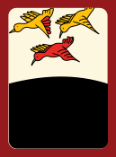
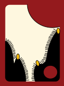
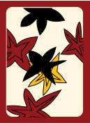
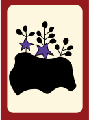

Go-stop is a traditional Korean card game that has been played for many generations, played with the hanafuda card deck. It's usually played during family gatherings or traditional holidays. This is a very modified, simplified version of the game.
There are two players. The player whose turn it is will draw a card, which has a specific numeric value. The value of the card is added to the current player's score, unless either card comes up as a junk card. If this happens, this player's turn is over, and it is the other player’s turn. After each card draw, the current player can either draw the card again, or go (assuming a junk card not drawn) or if the current player feels that luck is running thin, they can pass to the other player, or stop. The first player to get 30 points or higher wins.(just an aside i havent finished coding the game yet lol)
The values of the cards are as follows:
Animal (끗): 20 points
Bright (광): 10 points
Junk (피): 5 points
 